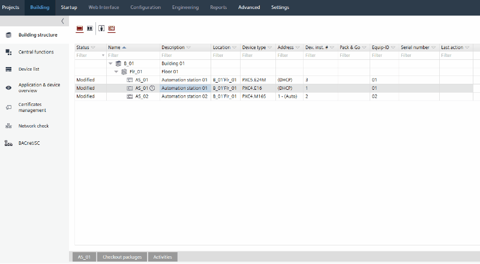

自定义 BACnet 对象实例编号


自定义 BACnet 对象实例编号后，需要完全加载相应的设备。
修改实例编号后，现有的 BACnet 客户端（例如 Desigo CC 或 Desigo Control Point）必须再次重新设计。
创建 BACnet 对象时，BACnet 对象实例编号具有默认值。可以修改 BACnet 对象实例编号的值。您可以导出包含 BACnet 对象实例编号的 .CSV 文件，修改值并再次导入 .CSV 文件。
Export .CSV file
- Data point is created and assigned.
Creating I/O data points - You are in Building > Building structure view.
- Select a device or a building element containing a device.
- Right-click and select Create export....
- The Create export dialog box opens.
- Select BACnet object instances.
- Click OK.
- An export container with a .CSV file is created and exported.
Customize BACnet object instance numbers
Only changes of values in columnOBJECT INSTANCE NUMBER导入后被 ABT 网站识别。所有其他更改都将被忽略。
- An export container with a .CSV file is created and exported.
- Click Open folder.
- Unzip the export container and open the .CSV file with Microsoft Excel.
- In column OBJECT INSTANCE NUMBER, change the value as required and save the .CSV file.
Import .CSV file
- In the context menu of the selected device, select Import BACnet object instances....
- Select .CSV file.
- Click Open.
- .CSV file is imported to ABT Site and new values are saved.
ABT 站点在导入期间验证 BACnet 对象实例编号的唯一性和格式。任何不正确的值（例如，重复的 BACnet 对象实例编号或错误的格式）都会阻止导入。在这种情况下，需要更正值并再次导入 .CSV 文件。